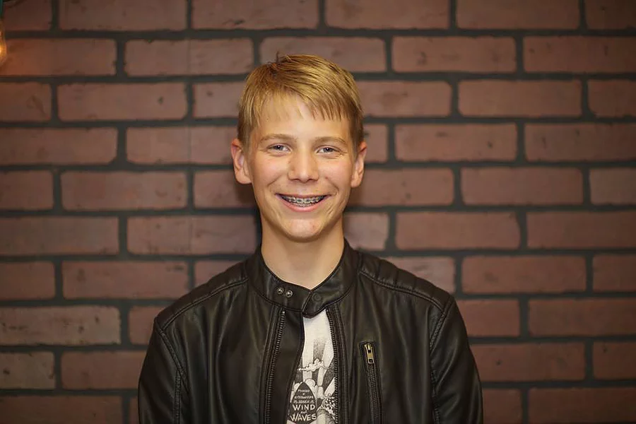

Drew Huegli

Drew Huegli plays keys for Meltdown Cinema. He is 14 and a Freshman at East Grand Rapids High School. In addition to being in the band and taking individual piano lessons, Drew plays trumpet in the High School band and is active in local theater. He is currently performing in the HS production of “You Can’t Take It With You”. Drew is also an avid sportsman, having played and retired from over 12 team and individual sports during his athletic career. He is presently considering taking up bowling. Drew’s favorite part of being a member of Meltdown Cinema is jamming out with his band mates and getting paid in candy for their gigs. He has recently turned his love of animals into a mission of one day owning a hedgehog, which he aspires to train to become the tip-maker for the band (because who can resist giving tips to a hedgehog?).